Interfacce grafiche
Programmazione orientata agli oggetti in Java
Giacomo Brambilla
Dipartimento di Ingegneria dell'Informazione - Università degli Studi di Parma
Definizione (Wikipedia)

L'interfaccia grafica utente, nota anche come GUI (dall'inglese Graphical User Interface), comunemente abbreviata in interfaccia grafica, è un tipo di interfaccia utente che consente all'utente di interagire con la macchina controllando oggetti grafici convenzionali.
L'importanza della GUI
Gli utenti spesso giudicano un sistema dalla sua interfaccia grafica piuttosto che dalle sue funzionalità
Una cattiva progettazione dell'interfaccia grafica può portare l'utente a commettere errori, anche gravi
Molti sistemi software non sono utilizzati a causa della loro interfaccia grafica
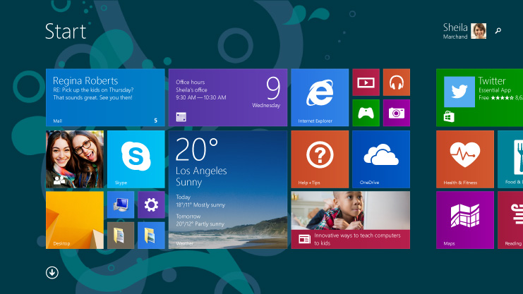
Progettazione di una GUI
Progettare una GUI è un'attività molto complessa
- Il progettista deve:
- conoscere la tipologia degli utenti e i loro bisogni;
- prevenire gli errori degli utenti, quando possibile;
- snellire il più possibile l'accesso ai dati e ai comandi.
- Una GUI:
- deve essere auto-consistente, cioè avere un modo uniforme per presentare i dati e per accettare i comandi;
- deve tenere presente le convenzioni del sistema in cui l'applicazione verrà eseguita.
Swing
- Swing è un framework per Java orientato allo sviluppo di interfacce grafiche.
- Parte delle classi del framework Swing sono implementazioni di widget come caselle di testo, pulsanti, pannelli e tabelle.
- La libreria Swing viene utilizzata come libreria ufficiale per la realizzazione di interfacce grafiche in Java. È un'estensione del precedente Abstract Window Toolkit.
- La differenza principale tra i due è che i componenti Swing sono scritti completamente in codice Java.
La mia prima interfaccia grafica
La maggior parte delle applicazioni saranno costruite all'interno di un JFrame, che crea una finestra indipendentemente dal sistema operativo in uso. Il titolo della finestra può essere impostato utilizzando il costruttore di JFrame, in questo modo:
import javax.swing.*;
public class HelloSwing {
public static void main(String[] args) {
JFrame frame = new JFrame("Hello Swing");
frame.setDefaultCloseOperation(JFrame.EXIT_ON_CLOSE);
frame.setSize(300, 100);
frame.setVisible(true);
}
}
La mia prima interfaccia grafica
setDefaultCloseOperation() indica al JFrame cosa fare quando l'utente chiude la finestra. La costante EXIT_ON_CLOSE dice di chiudere il programma. Senza questa chiamata, il comportamento di default è di non fare nulla, quindi l'applicazione non si chiuderebbe.
setSize() imposta la dimensione della finestra in pixel.
Attenzione all'ultima riga! Senza frame.setVisible(true) non si vedrebbe nulla sullo schermo!
Un po' di dinamismo
È possibile rendere le cose un po' più interessanti aggiungendo una JLabel al JFrame. Dopo un secondo, il testo della JLabel cambia!
import javax.swing.*;
import java.util.concurrent.*;
public class HelloLabel {
public static void main(String[] args) throws Exception {
JFrame frame = new JFrame("Hello Swing");
JLabel label = new JLabel("A Label");
frame.add(label);
frame.setDefaultCloseOperation(JFrame.EXIT_ON_CLOSE);
frame.setSize(300, 100);
frame.setVisible(true);
TimeUnit.SECONDS.sleep(1);
label.setText("Hey! This is Different!");
}
}
Un po' di dinamismo (2)
In realtà è bene che la main() thread non scriva direttamente sui componenti della GUI. Swing ha una sua thread dedicata alla gestione degli eventi che può essere utilizzata tramite SwingUtilities.invokeLater()
Un po' di dinamismo (2)
import javax.swing.*;
import java.util.concurrent.*;
public class SubmitLabelManipulationTask {
public static void main(String[] args) throws Exception {
JFrame frame = new JFrame("Hello Swing");
final JLabel label = new JLabel("A Label");
frame.add(label);
frame.setDefaultCloseOperation(JFrame.EXIT_ON_CLOSE);
frame.setSize(300, 100);
frame.setVisible(true);
TimeUnit.SECONDS.sleep(1);
SwingUtilities.invokeLater(new Runnable() {
public void run() {
label.setText("Hey! This is Different!");
}
});
}
}
In questo caso non si manipola la JLabel direttamente, ma si invia un Runnable alla thread di gestione degli eventi che si occuperà di eseguirlo.
Un po' di dinamismo (3)
Tutti i problemi di concorrenza sono risolti solamente se tutte le manipolazioni a componenti della GUI sono gestite tramite SwingUtilities.invokeLater():
public class SubmitSwingProgram extends JFrame {
JLabel label;
public SubmitSwingProgram() {
super("Hello Swing");
label = new JLabel("A Label");
add(label);
setDefaultCloseOperation(JFrame.EXIT_ON_CLOSE);
setSize(300, 100);
setVisible(true);
}
static SubmitSwingProgram ssp;
public static void main(String[] args) throws Exception {
SwingUtilities.invokeLater(new Runnable() {
public void run() { ssp = new SubmitSwingProgram(); }
});
TimeUnit.SECONDS.sleep(1);
SwingUtilities.invokeLater(new Runnable() {
public void run() {
ssp.label.setText("Hey! This is Different!");
}
});
}
}
Esercizi
- Provare che l'applicazione non si chiude senza la chiamata a setDefaultCloseOperation().
- Modificare il programma in modo che aggiunga dinamicamente un numero casuale di JLabel.
Un semplice framework grafico
import javax.swing.*;
public class SwingFramework {
public static void run(final JFrame f, final int width, final int height) {
SwingUtilities.invokeLater(new Runnable() {
public void run() {
f.setTitle(f.getClass().getSimpleName());
f.setDefaultCloseOperation(JFrame.EXIT_ON_CLOSE);
f.setSize(width, height);
f.setVisible(true);
}
});
}
}
Un semplice framework grafico
Un framework è un'architettura logica di supporto su cui un software può essere progettato e realizzato, spesso facilitandone lo sviluppo da parte del programmatore. Alla base di un framework c'è sempre una serie di librerie di codice. L'utilizzo di un framework impone al programmatore una precisa metodologia di sviluppo del software. (Wikipedia)
SwingFramework combina le idee precedenti e riduce il codice ridondante per facilitare la creazione di semplici applicazioni Swing che utilizzino JFrame. Il metodo statico run() imposta il nome di classe del JFrame come titolo della finestra.
Esercizio
- Modificare il programma SubmitSwingProgram in modo che utilizzi SwingFramework.
Creazione di un pulsante
import javax.swing.*;
import java.awt.*;
public class ButtonApp extends JFrame {
private JButton b1 = new JButton("Button 1");
private JButton b2 = new JButton("Button 2");
public ButtonApp() {
setLayout(new FlowLayout());
add(b1);
add(b2);
}
public static void main(String[] args) {
SwingFramework.run(new ButtonApp(), 200, 100);
}
}
Creazione di un pulsante
La creazione di un pulsante è abbastanza semplice: basta chiamare il costruttore JButton con l'etichetta che si desidera sopra al pulsante. È possibile anche applicare immagini sopra ai pulsanti.
Tipicamente all'interno della classe si crea un campo per ogni pulsante, in modo da mantenerne il riferimento per usi successivi.
Creazione di un pulsante
Nell'esempio mostrato, compare qualcosa di nuovo: prima di posizionare gli elementi nel JFrame, viene impostato un layout manager di tipo FlowLayout. Il layout manager permette di definire come i componenti sono posizionati all'interno dela finestra. Il comportamento normale del JFrame è l'utilizzo del BorderLayout che in questo caso fa sì che ogni componente si copra a vicenda (si scoprirà dopo perché). Invece, il FlowLayout fa sì che i componenti siano disposti scorrendo da sinistra a destra e dall'altro verso il basso.
Esercizio
- Verificare che senza la chiamata a setLayout() in ButtonApp, nel programma compare un solo pulsante.
La cattura degli eventi
Eseguendo il programma precedente, alla pressione del pulsante non accade nulla. Occorre infatti collegare gli eventi al codice che reagisce a questi eventi. Si parla dunque di programmazione a eventi.
Swing permette di realizzare tutto questo in modo pulito, separando l'interfaccia (i componenti grafici) dall'implementazione (il codice che si vuole eseguire quando un evento accade).
La cattura degli eventi
import javax.swing.*;
import java.awt.*;
import java.awt.event.*;
public class EventApp extends JFrame {
private JButton b1 = new JButton("Button 1");
private JButton b2 = new JButton("Button 2");
private JTextField txt = new JTextField(10);
private ActionListener bl = new ActionListener() {
public void actionPerformed(ActionEvent e) {
String name = ((JButton)e.getSource()).getText();
txt.setText(name);
}
};
public EventApp() {
b1.addActionListener(bl);
b2.addActionListener(bl);
setLayout(new FlowLayout());
add(b1);
add(b2);
add(txt);
}
public static void main(String[] args) {
SwingFramework.run(new EventApp(), 200, 150);
}
}
La cattura degli eventi
Nel caso del JButton, per manifestare interesse all'evento associato alla pressione del pulsante, si chiama il metodo addActionListener() di JButton. Questo metodo prevede un oggetto che implementa l'interfaccia ActionListener come argomento. In questo caso l'ActionListener è definito come classe interna anonima. Il metodo actionPerformed() sarà quindi chiamato ogni volta il pulsante verrà premuto.
La cattura degli eventi
JTextField è un componente Swing in cui l'utente (o, come in questo caso, il programma) può inserire del testo. Il modo più semplice per utilizzare un JTextField è quello di chiamarne il costruttore comunicandone la larghezza. Il metodo setText() permette quindi di modificarne il contenuto.
L'argomento del metodo actionPerformed() è di tipo ActionEvent, che contiene le informazioni sull'evento su chi l'ha generato. Il metodo getSource() restituisce l'oggetto in cui è stato generato l'evento (in questo caso uno dei due oggetti JButton).
Esercizio
- Creare un'applicazione utilizzando la classe SwingFramework che includa un campo di testo e tre pulsanti. Alla pressione di ogni pulsate, il campo di testo mostrerà testi differenti.
Eventi e listener
Tutti i componenti Swing includono metodi per aggiungere e rimuovere listener, del tipo addXXXListener() e removeXXXListener(). In tutti i casi "XXX" rappresenta anche l'argomento del metodo.
Esistono diversi eventi base con i rispettivi listener associati come KeyEvent (per gli eventi da tastiera), MouseEvent (per gli eventi da mouse), WindowEvent (per gli eventi associati alla finestra), ecc.
Controllare il layout
In Swing la posizione dei componenti all'interno della finestra non è definita in modo assoluto ma è decisa da un layout manager che decide come disporre i componenti in base all'ordine con cui questi sono aggiunti utilizzando il metodo add(). La dimensione, la forma e la posizione dei componenti sarà molto diversa a seconda del layout manager.
Controllare il layout
JApplet, JFrame, JWindow, JDialog, JPanel sono contenitori di primo livello, non possono essere contenuti in altri contenitori, ma possono contenere uno o più componenti. Essendo Container, sono dotati del metodo setLayout() che permette di scegliere il layout manager.
BorderLayout
A meno che questo non venga modificato, un JFrame utilizzerà BorderLayout di default. Senza altre istruzioni, tutto ciò che viene aggiunto tramite il metodo add() è posizionato al centro e allargato fino al bordo della finestra.
BorderLayout utilizza il concetto di regioni di bordo e area centrale. Quando si aggiunge qualcosa al BorderLayout è possibile utilizzare il metodo add() specificando un valore costante come primo argomento.
BorderLayout
| Valore costante | Descrizione |
|---|---|
| BorderLayout.NORTH | In alto |
| BorderLayout.SOUTH | In basso |
| BorderLayout.EAST | A destra |
| BorderLayout.WEST | A sinistra |
| BorderLayout.CENTER | Riempie l'area centrale fino agli altri componenti laterali |
BorderLayout
import javax.swing.*;
import java.awt.*;
public class BorderLayoutApp extends JFrame {
public BorderLayoutApp() {
add(BorderLayout.NORTH, new JButton("North"));
add(BorderLayout.SOUTH, new JButton("South"));
add(BorderLayout.EAST, new JButton("East"));
add(BorderLayout.WEST, new JButton("West"));
add(BorderLayout.CENTER, new JButton("Center"));
}
public static void main(String[] args) {
SwingFramework.run(new BorderLayoutApp(), 300, 250);
}
}
BorderLayout
Se non si specifica un'area in cui posizionare l'oggetto, il valore di default è BorderLayout.CENTER.
Per ogni posizionamento a parte quello centrale, l'elemento da inserire è compresso per occupare la più piccola quantità possible di spazio in una dimensione, mentre dall'altra è allargato al massimo.
BorderLayout
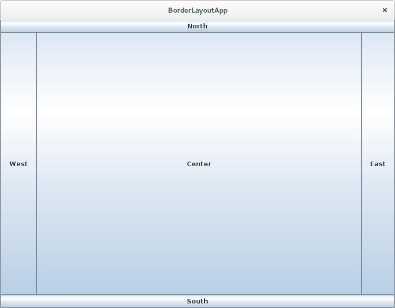FlowLayout
Questo layout semplicemente dispone i componenti scorrendo da sinistra a destra finché lo spazio è esaurito, quindi scende di una riga e continua a scorrere. Con FlowLayout i componenti assumono la loro dimensione naturale, che nel caso di un JButton corrisponde alla dimensione della stringa.
Per ogni posizionamento a parte quello centrale, l'elemento da inserire è compresso per occupare la più piccola quantità possible di spazio in una dimensione, mentre dall'altra è allargato al massimo.
FlowLayout
import javax.swing.*;
import java.awt.*;
public class FlowLayoutApp extends JFrame {
public FlowLayoutApp() {
setLayout(new FlowLayout());
for(int i = 0; i < 20; i++)
add(new JButton("Button " + i));
}
public static void main(String[] args) {
SwingFramework.run(new FlowLayoutApp(), 300, 300);
}
}
FlowLayout
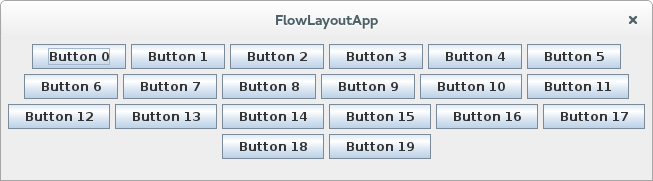Tutti i componenti sono compattati alla loro dimensione minima.
Ridimensionando la finestra, il layout manager ridisporrà i componenti di conseguenza.
GridLayout
Un GridLayout permette di costruire una tabella di componenti che vengono posizionati da sinistra a destra e dall'alto verso il basso, all'interno di una griglia. Nel costruttore si specifica il numero di righe e colonne.
GridLayout
import javax.swing.*;
import java.awt.*;
public class GridLayoutApp extends JFrame {
public GridLayoutApp() {
setLayout(new GridLayout(7,3));
for(int i = 0; i < 20; i++) {
add(new JButton("Button " + i));
}
}
public static void main(String[] args) {
SwingFramework.run(new GridLayoutApp(), 300, 300);
}
}
GridLayout
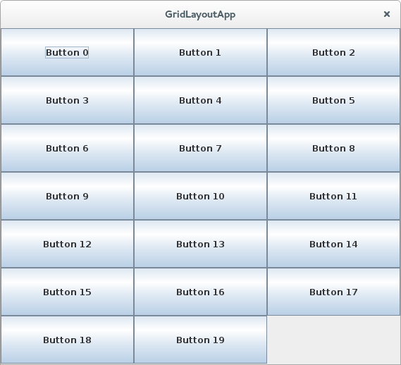Poiché la griglia è composta da 21 spazi e sono stati aggiunti solamente 20 pulsanti, l'ultimo spazio rimane vuoto.
Posizionamento assoluto
- È anche possibile impostare la posizione assoluta dei componenti grafici:
- impostando a null il layout manager del Container: setLayout(null);
- chiamando setBounds() oppure reshape() per ogni componente e passando un rettangolo di contorno in coordinate pixel. Può essere fatto nel costruttore oppure in paint().
Componenti Swing
Ora che si ha compreso il modello a eventi e la gestione dei layout, si è pronti a vedere i componenti principali offerti da Swing.
Controlli base
Componenti semplici utilizzati principalmente per ottenere un input dall'utente.
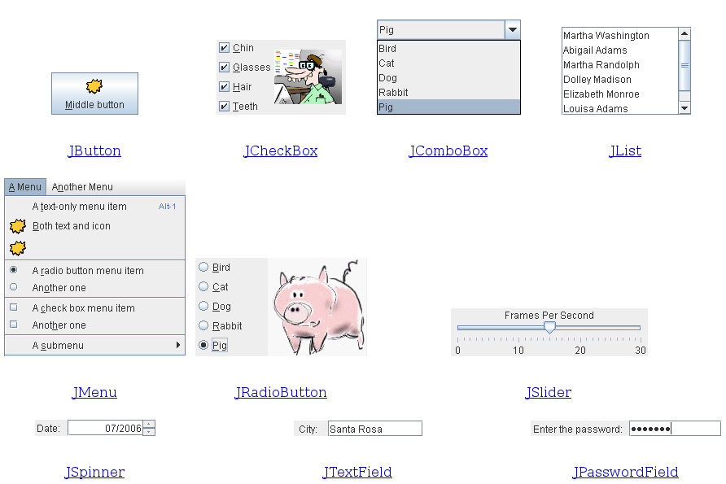Componenti interattivi per informazioni strutturate
Questi componenti mostrano informazioni altamente strutturate che possono essere modificate dall'utente.
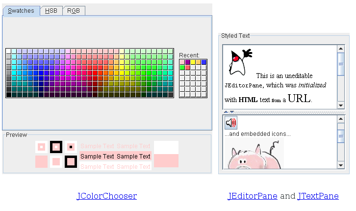Componenti interattivi per informazioni strutturate (2)
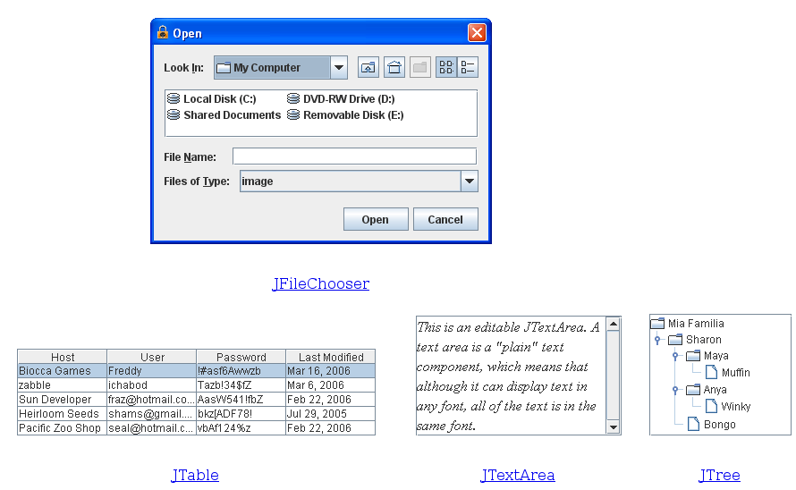Componenti per informazioni non modificabili
Questi componenti servono per fornire informazioni all'utente.
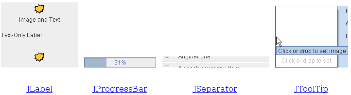Contenitori di primo livello
Almeno uno di questi deve essere presente in ogni applicazione Swing.
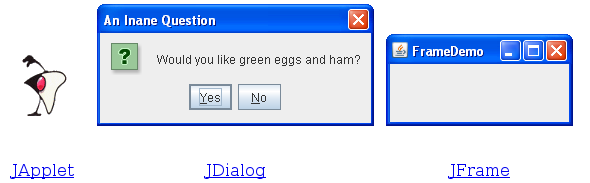Contenitori generici
Sono contenitori generici utilizzati in molte applicazioni Swing.
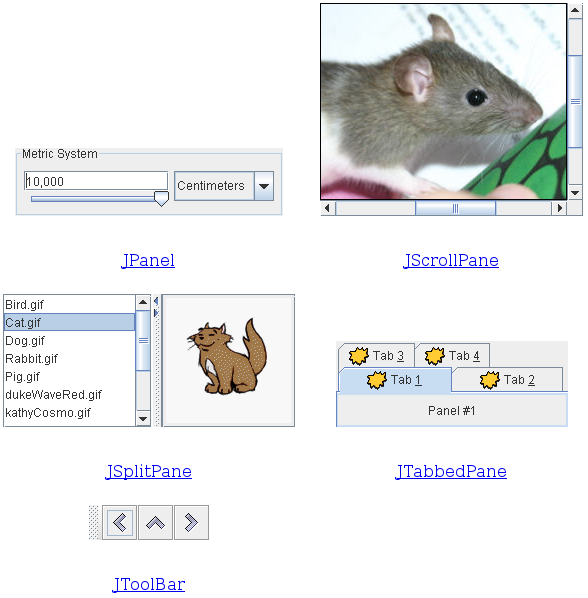Contenitori specifici
Contenitori specifici per interfacce grafiche particolari.
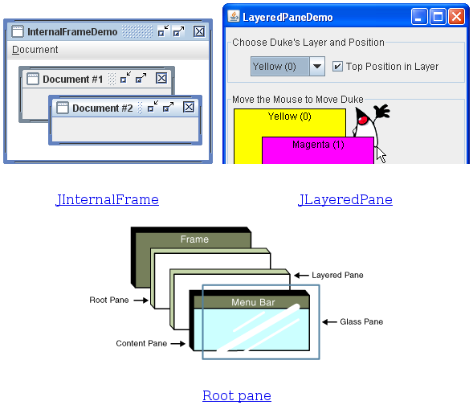Non solo Swing…
Il paradigma di programmazione a eventi è ampiamente utilizzato nello sviluppo di interfacce grafiche.
Swing è un esempio di libreria dedicata allo sviluppo di interfacce grafiche in Java che adotta questo modello di sviluppo, ma non è l'unico: anche in Android le interfacce grafiche si realizzano seguendo lo stesso principio.

Le interfacce grafiche in Android
Le interfacce grafiche in Android sono costruite utilizzando una gerarchia di oggetti View e ViewGroup. Gli oggetti View sono i tipici componenti grafici delle interfacce grafiche come pulsanti e campi di testo; gli oggetti ViewGroup sono invece contenitori invisibili che definiscono il modo in cui i componenti sono disposti.
Android fornisce un vocabolario XML che corrisponde a sottoclassi di View e ViewGroup in modo da definire l'interfaccia grafica tramite XML.
Le interfacce grafiche in Android
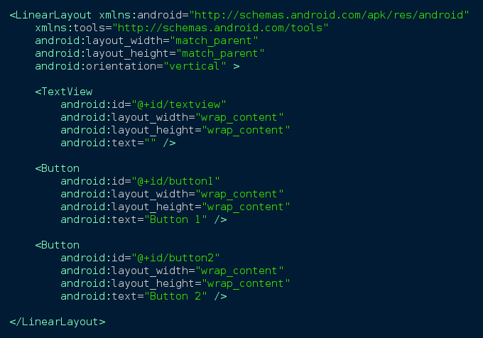Le interfacce grafiche in Android
LinearLayout è una sottoclasse di ViewGroup che dispone i componenti grafici orizzontalmente o verticalmente, come specificato dall'attributo android:orientation. Ogni componente appare sullo schermo nell'ordine in cui appare nel file XML.
android:layout_width e android:layout_height, sono necessari per specificare le dimensioni di qualsiasi View. Il valore "match_parent" dichiara che la View dovrebbe avere le dimensioni della View genitore.
Le interfacce grafiche in Android
Per creare un campo di testo non modificabile dall'utente basta aggiungere un elemento TextView all'interno del LinearLayout. L'attributo android:id fornisce un identificativo unico per la View che può essere utilizzato per ottenere un riferimento all'oggetto nel codice dell'applicazione.
Analogamente per creare un pulsante basta aggiungere un elemento Button.
Le interfacce grafiche in Android
public class MainActivity extends Activity {
private Button button1;
private Button button2;
private TextView textview;
@Override
protected void onCreate(Bundle savedInstanceState) {
super.onCreate(savedInstanceState);
setContentView(R.layout.layout_main);
button1 = (Button) findViewById(R.id.button1);
button2 = (Button) findViewById(R.id.button2);
textview = (TextView) findViewById(R.id.textview);
OnClickListener listener = new OnClickListener() {
@Override
public void onClick(View v) {
CharSequence name = ((Button) v).getText();
textview.setText(name);
}
};
button1.setOnClickListener(listener);
button2.setOnClickListener(listener);
}
}
Le interfacce grafiche in Android
Come per le applicazioni Swing, anche in Android si definisce un listener per un particolare tipo di evento (in questo caso l'evento associato all'azione "click") e si aggiunge al componente interessato a tale evento.
In questo caso, quando uno dei due pulsanti viene premuto, il testo all'interno della TextView è sostituito con il nome del Button che ha scatenato l'evento.
Esercizio
- Realizzare semplici interfacce grafiche per i programmi svolti durante le lezioni precedenti, utilizzando la libreria Swing.
Riferimenti
- Documentazione Java
- http://docs.oracle.com/javase/
- Eckel
- http://www.mindview.net/Books/
- Thinking in Java
- Thinking in Patterns (with Java)